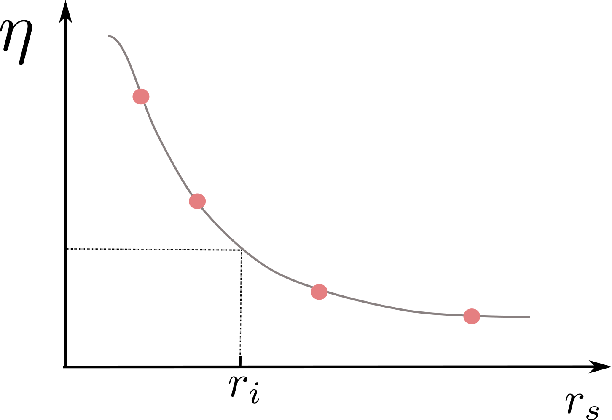

Electronic friction models
To perform molecular dynamics with electronic friction (MDEF) a specific type of model must be used that provides the friction tensor used to propagate the dynamics. For this we recommend using FrictionProviders.jl, however, various analytic models can also be employed.
As detailed in the MDEF page, there are two ways to obtain friction values, either from the local density friction approximation (LDFA), or from time-dependent perturbation theory (TDPT), also known as orbital-dependent friction (ODF). The models on this page describe our existing implementations.
FrictionProviders.jl
Machine learning-based models, and cube-based calculators can called through FrictionProviders.jl connector package.
Currently, FrictionProviders.jl supports LDFA (density) models based on:
- Cube electronic densities
- (ACEpotentials.jl)[https://github.com/ACEsuit/ACEpotentials.jl]
- (Scikit-learn)[https://github.com/scikit-learn/scikit-learn]
TDPT (ODF) friction models based on:
- (ACEds.jl)[https://github.com/ACEsuit/ACEds.jl]
The use of FrictionProviders.jl with LDFA (Cube calculator and ACE model), and TDPT (ACEds-based model) is explained on the reactive scattering example, to investigate the scattering of a diatomic molecule from a metal surface.
Density models for LDFA
Our Cube-LDFA implementation takes a .cube file containing the electron density, whereas the ML-LDFA models predict the density directly. In both cases the obtained local density is then used to evaluate the friction.
The model works by fitting the LDA data provided by [2] that provides the LDFA friction coefficient as a function of the Wigner-Seitz radius. When the model is initialised, the LDA data from [2] is interpolated using DataInterpolations.jl with a cubic spline. Then, whenever required, the density at the current position is taken directly from the .cube file and converted to the Wigner-Seitz radius with the following relation:
\[r_s(\rho) = (\frac{3}{4\pi \rho (\mathbf{r_{i}})})^{1/3}.\]
Then, the interpolation function is evaluated with this value for the radius, which gives the LDA friction. Optimally, this would be done via an ab initio calculation to get the electron density, but this model instead uses a pre-computed .cube file to get the density with minimal cost. This makes the assumption that the density does not change throughout the dynamics, or that the surface is assumed to be frozen in place.
This graph shows how we interpolate the LDA data and evaluate the friction coefficient as a function of the Wigner-Seitz radius. 
Analytic models
Since ab initio friction calculations are often expensive it is useful to have some models that we can use to test different friction methods. The DiabaticFrictionModel is the abstract type that groups together the diabatic models for which electronic friction can be evaluated. These have many electronic states, modelling the electronic structure characteristic of a metal. The friction is calculated for these models directly from the nonadiabatic couplings with the equation:
\[γ = 2\pi\hbar \sum_j <1|dH|j><j|dH|1> \delta(\omega_j) / \omega_j\]
where the delta function is approximated by a normalised Gaussian function and the sum runs over the adiabatic states ([3]). The matrix elements in this equation are the position derivatives of the diabatic hamiltonian converted to the adiabatic representation.
The analytic friction models and the equation above are experimental and subject to change.